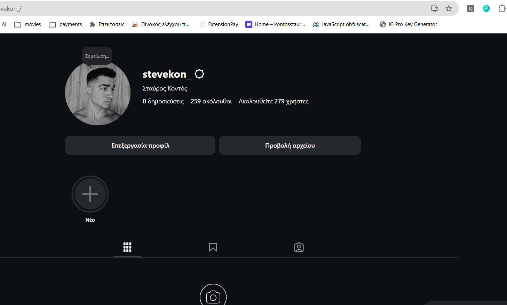
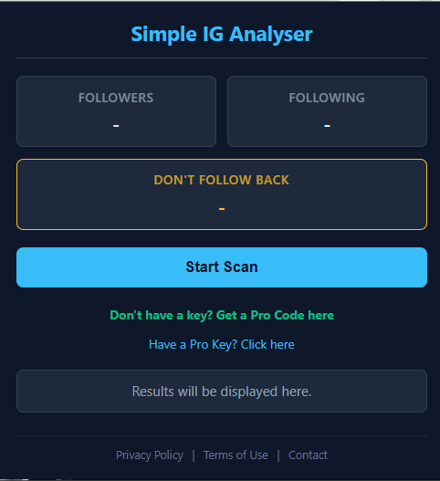
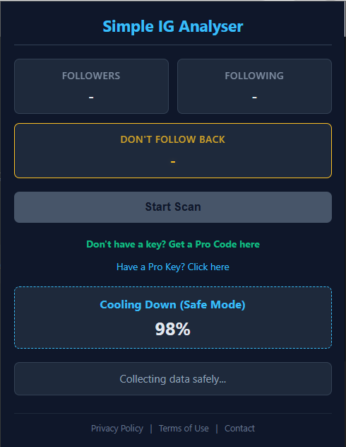
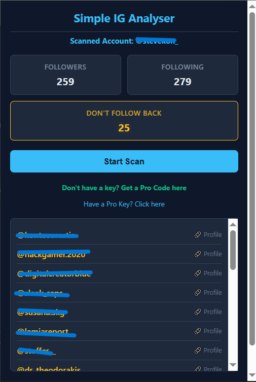

Professional Account Management
The safest and most accurate way to analyze your Instagram followers and following lists, identifying non-followers without sharing your credentials.
Privacy First
No passwords required. All data is processed entirely within your browser's local environment. We do not transmit your private data.
Account Safety
Built-in randomized delays and cooling breaks mimic human behavior to protect your account from action blocks or detection.
Pro Features
Upgrade to Pro to unlock recent unfollower tracking, new follower insights, and remove the 1,000 users limit.
Accurate Data
Direct API integration ensures accurate analysis based on the actual active users list, bypassing slow profile counters.
How It Works
1. Go to your Instagram Profile

2. Open the Extension & Scan

3. Wait for Data Processing

4. View Accurate Results
